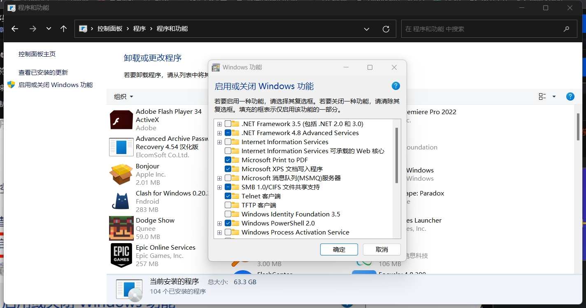
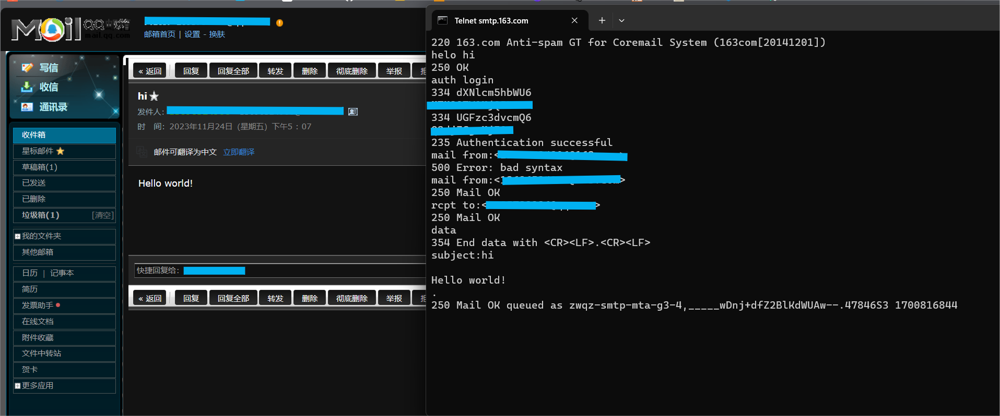
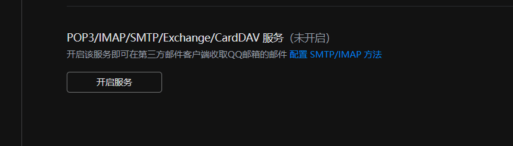
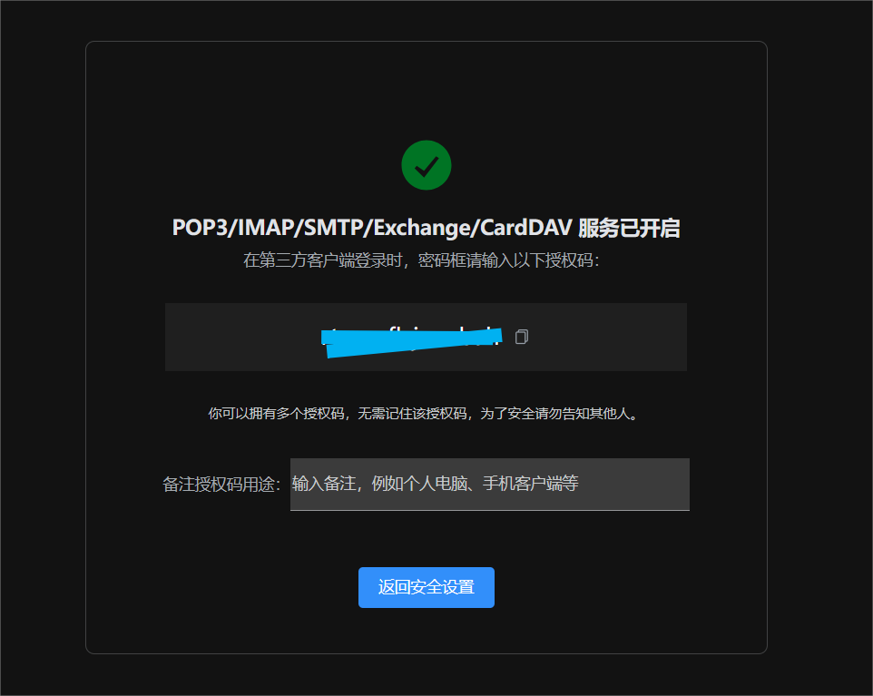
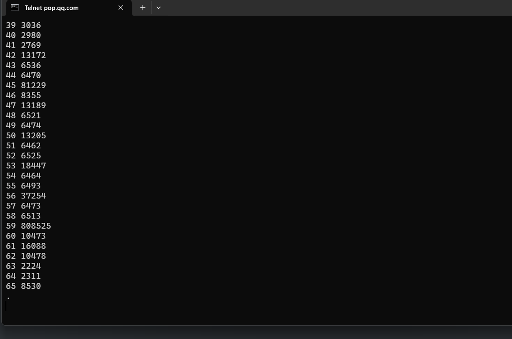
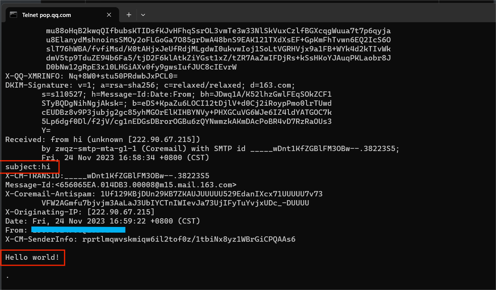

命令行收发邮件
win11下telnet客户端默认是关闭的，首先打开telnet
控制面板-程序-程序与功能-启用或关闭Windows功能

发送邮件
cmd中telnet远程登录163邮箱smtp服务器，端口号25
1 | telnet smtp.163.com 25 |
注意：以下过程，telnet中输入任何字符如果有错，该条命令就需要回车重新写，就算回退重写只是表面改变了，实际还是接着输入，运行一定会报错或输出不符预期
向服务器打招呼,看是否得到正确回应（有的服务器是ehlo）
1 | helo hi |
选择 auth login登录方式
1 | auth login |
输入base64编码后的用户名密码（用户名不带@163.com），Authentication successful验证成功
接着输入发件人邮箱、收件人邮箱，输入data开始写信
1 | mail from:<发件人邮箱地址> |
输入邮件主题
1 | subject:hi |
空一行之后输入内容
1 | Hello world! |
写完后输入
1 | . |
进入收件人邮箱查看，有该邮件
以下是完整过程与结果截图

接收邮件
pop3接收邮件，qq的端口号110，注意此处是110，QQ官网上给的995是SSL加密的端口
1 | telnet pop.qq.com 110 |
先得在qq邮箱中启用pop3


授权码复制一下，等下password可以输授权码
登录pop3后，输入用户名、授权码
1 | user 用户名 |
1 | list //查看所有邮件 |

1 | retr 63 //retr命令查看邮件内容 |

此外还有命令
1 | dele //删除邮件（非真正删除，而是标记删除） |
本博客所有文章除特别声明外，均采用 CC BY-NC-SA 4.0 许可协议。转载请注明来自 Pluto's blog！


![WP-[2025.1西湖论剑]matrixRSA](/2025/02/03/2025%E8%A5%BF%E6%B9%96%E8%AE%BA%E5%89%91-matrixRSA/cover.jpg)
![WP-[2025.1软件系统安全赛]happylock](/2025/01/14/2025%E8%BD%AF%E4%BB%B6%E7%B3%BB%E7%BB%9F%E5%AE%89%E5%85%A8%E8%B5%9B-happylock/cover.jpg)
![WP-[2025.1软件系统安全赛]donntyousee](/2025/01/10/2025%E8%BD%AF%E4%BB%B6%E7%B3%BB%E7%BB%9F%E5%AE%89%E5%85%A8%E8%B5%9B-donntyousee/cover.jpg)